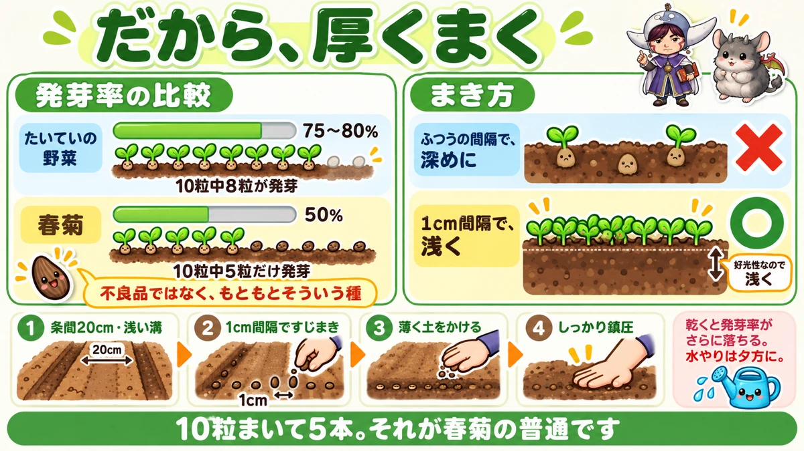
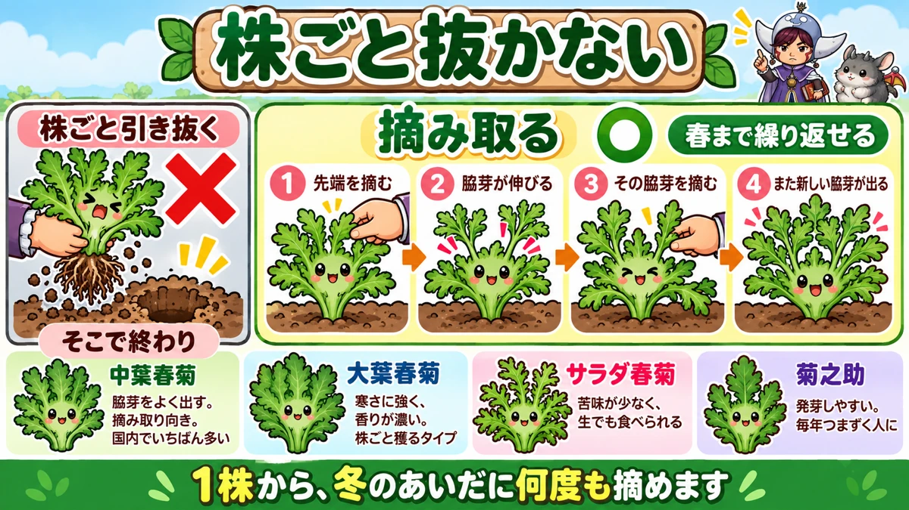
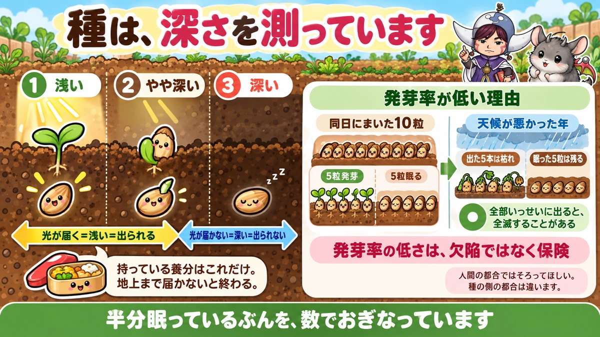

春菊は、芽が半分しか出ません🌿 だから厚くまいて正解です
🌿「まいたのに、すかすかにしか出なかった」
🌿「秋に一度穫って、それで終わってしまった」
🌿「鍋のたびに買っているけど、けっこう高い」
どうも、8150（えいこう）です🌱 家庭菜園歴8年、理科の教員免許を持っていて、有機・無農薬で野菜を育てています。
前回はしょうがでした。今日は春菊です。
春菊は★冬にいちばん働いてくれる葉物だと思っています。うまくいけば★春まで穫り続けられます。
ただし、最初にひとつ知っておいてほしいことがあります。
先に、この記事でいちばん言いたいことを言っておきますね。
★春菊の発芽率は、もともと50%ほどです。
★半分しか出ないのが普通です。腕のせいではありません🌿
まず、春菊の基本データ
3つだけ押さえてください
- 科：キク科（レタス・ごぼうの仲間。アブラナ科ではありません）
- タネまき：8月下旬〜9月中旬（秋まき）／3〜4月（春まき）
- 収穫：11月〜翌春
※時期は中間地（関東〜関西の平野部）が目安。寒い地域は少し遅らせ、暖かい地域は早めに。
秋まきのほうが、簡単です
春菊は★涼しい気候が好きです。
★春まきもできますが、秋まきのほうが作りやすいです。
★温度に、はっきりした線があります
ここは覚えておいてください。
- ★発芽適温も生育適温も、15〜20℃
- ★35℃以上では、発芽率がぐっと落ちます
- ★30℃以上では、育ちそのものが止まります
つまり★暑いうちにまいても、無駄になります。
まくのは、9月10日ごろまで
秋まきには、前後の締め切りがあります。
- ★早すぎる … 暑くて芽が出ない
- ★遅すぎる … 冬までに大きくならない
★一般地なら、9月10日ごろまでを目安にしてください。
★石灰は、省かないでください
春菊には、はっきりした弱点があります。
★酸性の土に弱い。
だから★石灰を必ず入れてください。目安はこうです。
- ★苦土石灰 … 1平米に100〜150g。★2週間以上前に入れる
- ★貝殻石灰（有機石灰） … 1平米に150〜200g。★まく直前でもよい
★思い立ったのが直前なら、貝殻石灰を選んでください。多めに入れても失敗しにくい資材です。
★発芽率50%、という前提

他の野菜と、比べてみます
野菜の種は、袋に発芽率が書いてあります。
★たいていの野菜は75〜80%以上です。
★春菊は50%ほどです。
つまり、こういうことです
10粒まいたら、★5本しか出ません。
これは★不良品ではありません。もともとそういう種です。
私は最初、★「まき方が悪いのかな」と何度もやり直しました😅 そういう話ではなかったんですね。
だから、厚くまきます
対策は単純です。
★他の野菜より厚くまく。
★1cm間隔でも構いません。ぎっしりです。
★春菊の種は安くて量も多いので、遠慮しなくて大丈夫です。出すぎたら間引けば済みます。
★浅くまいてください
もうひとつ、重要な性質があります。
★春菊は、光が当たらないと芽が出にくい種です。
しそと同じですね。だから★まき溝は浅めにしてください。
★深くまくと、ただでさえ低い発芽率がさらに落ちます。
まき方の手順
- ★条間20cmでまき溝を作る（浅めに）
- ★1cm間隔で、すじまき
- ★薄く土をかける
- ★上からしっかり鎮圧する
鎮圧を、忘れずに
ここも効きます。
★土が乾いていると、春菊の発芽率はさらに落ちます。
だから★覆土したら、手のひらでしっかり押さえてください。種と土を密着させます。
水やりは、夕方に
まいた時期はまだ暑いです。
★水やりは朝晩の涼しい時間に。おすすめは夕方です。
★日中は避けてください。
水場が遠い方は、★雨の予報の前後を狙ってまくと楽です。
★株ごと抜かないでください

抜くと、そこで終わりです
いちばんもったいない収穫の仕方が、これです。
★株ごと引き抜く。
スーパーの春菊が根つきで売られているので、★そういうものだと思ってしまいますよね。
摘み取ると、続きます
正しくはこうです。
- ★まず先端を摘む
- ★刺激を受けて、脇芽が伸びてくる
- ★伸びた脇芽を摘む
- ★また新しい脇芽が出る
★これを繰り返すと、春まで穫り続けられます。
1株から、何度も
数えたことがあります。
★私の畑では、1株から冬のあいだに5〜6回摘みました。
★鍋のたびに畑に行って、必要な分だけ摘む。買う必要がなくなります。
品種で、向き不向きがあります
摘み取りたいなら、品種を選んでください。
- ★中葉春菊 … 国内でいちばん多い品種。病気に強く、★脇芽をよく出します。摘み取り向き
- ★大葉春菊 … 関西で好まれます。★寒さに強く、香りが濃い。株ごと穫るタイプ
- ★サラダ春菊 … 苦味が少なく、生でも食べられます
- ★菊之助 … 香りがまろやかで、★発芽もしやすい品種です
迷ったら
- ★何度も穫りたい → 中葉春菊
- ★香りが好き → 大葉春菊
- ★苦いのが苦手 → サラダ春菊
- ★発芽で毎年つまずく → 菊之助
★白菜やキャベツの、間に植える
春菊は、虫がつきません
前に連作障害の記事で、★「アブラナ科を並べない」と書きました。
★間にキク科やセリ科を挟むと虫が減る、という話です。
★春菊は、そのキク科です。
香りが、嫌われています
春菊には独特の香りがありますよね。
★あれを害虫が嫌います。
だから★春菊自体もほとんど虫がつきませんし、隣の野菜も守られます。
具体的な置き方
★キャベツ・白菜・大根のうねの、間に挟んでください。
★1列おきでも、株のあいだでも構いません。
私は★白菜の列と列のあいだに、春菊を1列入れています。青虫の被害がはっきり減りました。
ただし、広がります
注意点をひとつ。
★春菊は育つと、思っているより横に広がります。
★間に押し込みすぎると、あとで窮屈になります。少し余裕をみてください。
最後は、土に返せます
シーズンが終わったあとの話です。
★春菊の茎は、そんなに太くなりません。
ブロッコリーの茎はハサミが立ちませんが、★春菊なら簡単に切れます。
★乾かしてすき込めば、そのまま養分になります。窒素をよく吸っている残渣です。
学ぶ：小さい種は、深さを測っています🔬

なぜ光が要るのか
前にタネまきの記事で★「光が要る種がある」と書きました。
今日は、その理由を書きます。
種は、自分の弁当だけで地上に出ます
種が持っている養分は、★それだけです。あとから足せません。
その養分で★地上まで届かなければ、そこで終わりです。
そして★春菊の種は、とても小さい。持ち出せる弁当が少ないんですね。
だから、光で判断しています
ここが面白いところです。
★光が届いている ＝ 浅いところにいる ＝ 出られる
★光が届かない ＝ 深いところにいる ＝ 出られない
だから★光を感じるまで、芽を出さずに待っています。
★好光性というのは、種が深さを測っている仕組みなんですね。
発芽率が低いのも、作戦です
もうひとつ。★なぜ半分しか出ないのでしょう。
これも理由があります。
★全部いっせいに芽を出すと、天候が悪かったときに全滅します。
★出る種と、まだ出ない種を分けておけば、どちらかが生き残ります。
人間には不便、植物には有利
つまり★発芽率の低さは、欠陥ではなく保険です。
★人間の都合では「そろってほしい」のですが、種の側の都合は違います。
こう考えると、厚くまくのも納得できますよね。★半分眠っているぶんを見越して、数でおぎなっているわけです☺️
まとめ
ここまで読んでくださって、ありがとうございます！
- ★春菊はキク科。レタス・ごぼうの仲間
- ★秋まきのほうが作りやすい
- ★発芽適温も生育適温も15〜20℃
- ★35℃以上で発芽率が落ち、30℃以上で生育が止まる
- ★秋まきは9月10日ごろまでが目安
- ★酸性に弱いので石灰は必須
- ★苦土石灰は2週間以上前、貝殻石灰は直前でもよい
- ★発芽率は50%ほど。半分出れば正常
- ★だから1cm間隔で厚くまく
- ★好光性なので、まき溝は浅めに
- ★覆土後はしっかり鎮圧する
- ★水やりは夕方。日中は避ける
- ★株ごと抜かず、先端を摘む
- ★脇芽を摘み続ければ春まで穫れる
- ★摘み取りなら中葉春菊、発芽で困るなら菊之助
- ★キク科なので虫がつきにくい
- ★白菜・キャベツの間に植えると、そちらの虫も減る
- ★育つと横に広がるので余裕をみる
- ★終わったら乾かしてすき込める
全部やろうとしなくて大丈夫です。まずは★今年は思いきって、いつもの倍の濃さでまいてみてください。それでちょうどよくなります🌿
次回は、みょうがの話です。★一度植えると何年も穫れる、日陰の野菜のお話をします🌿
春菊のタネ
発芽率が5割ほどなので、ケチらず厚くまくのが正解です。少量パックを買うより、ある程度の量があるほうが結果的に安く済みます。
![[商品価格に関しましては、リンクが作成された時点と現時点で情報が変更されている場合がございます。]](https://hbb.afl.rakuten.co.jp/hgb/552615f0.9cc2855e.552615f1.776f7de9/?me_id=1251188&item_id=10000837&pc=https%3A%2F%2Fthumbnail.image.rakuten.co.jp%2F%400_mall%2Fyonezawa%2Fcabinet%2Ftane01%2F10hamono%2Fchubashungikus.jpg%3F_ex%3D240x240&s=240x240&t=picttext "[商品価格に関しましては、リンクが作成された時点と現時点で情報が変更されている場合がございます。]")

不織布
春菊は光が当たらないと芽が出ないので、土を薄くしかかけられません。そのぶん乾きやすいので、上から不織布をかけて水分を守ります。
![[商品価格に関しましては、リンクが作成された時点と現時点で情報が変更されている場合がございます。]](https://hbb.afl.rakuten.co.jp/hgb/56bc237a.e97551b1.56bc237b.2513ed10/?me_id=1310260&item_id=10000879&pc=https%3A%2F%2Fthumbnail.image.rakuten.co.jp%2F%400_mall%2Fdiokasei%2Fcabinet%2F007fusyokufu%2F12g%2Fimgrc0092049705.jpg%3F_ex%3D240x240&s=240x240&t=picttext "[商品価格に関しましては、リンクが作成された時点と現時点で情報が変更されている場合がございます。]")
防虫ネット
春菊は香りが強く虫がつきにくい野菜ですが、白菜やキャベツの間に植えるときは、そちらを守るためにネットが要ります。
![[商品価格に関しましては、リンクが作成された時点と現時点で情報が変更されている場合がございます。]](https://hbb.afl.rakuten.co.jp/hgb/56bc205d.0066fedc.56bc205e.af56d163/?me_id=1260467&item_id=10000299&pc=https%3A%2F%2Fthumbnail.image.rakuten.co.jp%2F%400_mall%2Fmarsol-morishita%2Fcabinet%2Fshouhinn%2Fbouchuu%2Fimgrc0090950099.jpg%3F_ex%3D240x240&s=240x240&t=picttext "[商品価格に関しましては、リンクが作成された時点と現時点で情報が変更されている場合がございます。]")
あわせて読みたい